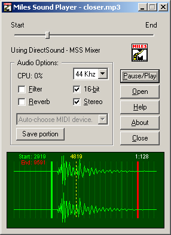

| Miles Sound System SDK 7.2a |
Q: | I'm getting a glitch when I loop an MP3 or ADPCM file - what can I do? |
A: | Short answer: Use MAKELOOP.EXE to encode any .MP3 or ADPCM .WAV files that need to be looped at runtime. The MAKELOOP.EXE utility is a Win32 console application that creates loopable IMA ADPCM .WAV files or, in conjunction with the LAME command-line encoder, loopable .MP3 files. It will accept PCM .WAV, ADPCM .WAV, or existing .MP3 files as input. MAKELOOP.EXE works by decimating your input file, or resampling it to conform to the next-smaller multiple of the encoded frame size. Frame sizes are typically very small -- on the order of 1000-4000 samples for ADPCM files and 1152 samples for MP3 files -- so this resampling process does not usually cause a large change in the pitch of the encoded sample. Next, MAKELOOP.EXE prepends a copy of the last frame in the file to the beginning of the file. This makes the file appear to be a continuous stream from the encoder's point of view, with the goal of preventing mismatches between ADPCM block initializers and MP3 overlap-window contents when the file is looped at runtime. The file is then compressed with either the LAME command-line encoder or the AIL_compress_ADPCM function, depending on the specified output file suffix. MP3 files are encoded with the --nores option to further reduce interframe dependencies. Finally, MAKELOOP.EXE post-processes the encoded output file to remove unnecessary frames, including silent and metadata frames added by LAME and the copy of the final frame that was prepended earlier. MAKELOOP.EXE is especially convenient because you don't need to specify subblock offsets with AIL_set_sample_loop_block or AIL_set_stream_loop_block to loop a file encoded by it. Just use AIL_set_sample_loop_count or AIL_set_stream_loop_count to loop the entire file. Most loopable .WAV files will sound great when encoded with MAKELOOP.EXE, saving your production department the need to select and audition loop points manually with the Miles Sound Player (below). You can run MAKELOOP.EXE with no command-line options to see usage notes for the current version. Most .WAV files can be encoded simply by running makeloop infile.wav outfile.mp3 to generate an .MP3 output file or makeloop infile.wav outfile.wav to generate an ADPCM .WAV file. Long answer: A number of things can go wrong when trying to loop or seek within an MP3 file or stream. Fundamentally, MP3 decoding is a DSP-intensive process that uses discrete mathematical transforms to operate on continuous real-world data -- which is itself partitioned into discrete frames! What that means is that MP3 frames can't be interpreted in a vacuum. To decode a given frame properly, the decoder must overlap its data with data left over from the previous frame. Worse, using an entirely-unrelated feature called the bit reservoir, MP3 files can 'borrow' space needed to store data for a particular frame from several of the preceding frames! These two factors make it unlikely that an arbitrary attempt to seek from one part of an MP3 file to another will be free of objectionable artifacts. In MSS version 7, we've introduced a handy utility as part of the Miles Sound Player application that will help you find glitch-free loop points in almost any given MP3 file. Several commercial sound editors will display the frame-boundary offsets within an MP3 file, but only the Miles Sound Player lets you place loop points and 'audition' them with the assurance that they'll sound the same in your own application!  After loading an MP3 or ADPCM file (or any other supported digital audio file), you can use the Pause/Play button to stop playback, then zoom in with the mouse wheel if necessary to reveal the frame boundaries. Left-click in the waveform display to place a green marker that designates the beginning of a loop; right-click to place the red end-of-loop marker. (An existing loop may be removed by clicking on one of its markers.) With a valid loop selection, playback will be constrained to the looped region the next time you hit Pause/Play. You'll be able to hear any artifacts resulting from gross mismatches in the overlap window and/or bit-reservoir contents between the boundary frames. Any calls to AIL_set_sample_position, AIL_set_stream_position, or AIL_set_sample_loop_block with MP3 source data should specify offsets that lie on frame boundaries. This helps us avoid mistakenly interpreting intraframe data as a valid frame boundary, making a bad glitching problem worse. The loop boundaries displayed by the Miles Sound Player are suitable for passing directly to AIL_set_sample_position, AIL_set_stream_position, or AIL_set_sample_loop_block. Note that MSS considers offset 0 to be the first byte after any ID3v2 tag or other metadata at the beginning of an MP3 file! Frame offsets reported by other MP3 editors will most likely be relative to the beginning of the entire file, making them unsuitable for use with the Miles API. Looping an entire MP3 file image by setting AIL_set_sample_loop_count on the HSAMPLE (or AIL_set_stream_loop_count on an HSTREAM) is still a bit tricky. The reason is that most MP3 encoders -- if not all of them -- write varying amounts of silent information at the end of the MP3 files they generate. Some also add silence to the beginning of the file. Consequently, even if you take pains to make your source sample data phase-continuous across a multiple of the MP3 frame size, you will still find that a looped file exhibits a brief dropout at the loop point. Because any arbitrary sequence of adjacent frames is a perfectly-valid MP3 file, though, you can use the 'Save portion' button in the Miles Sound Player to write the selected looped portion of the file to a separate .MP3 file. The resulting file, if looped, will sound the same as the original subblock loop in the file it came from. So you can either write down the selected frame boundaries and use AIL_set_sample_loop_block on the original file, or save only the looped portion to a separate file which is looped in its entirety. There's not much you can do about overlapped frame data other than to experiment to find 'loop-compatible' frames in the Miles Sound Player. However, the bit reservoir feature can be disabled with certain MP3 encoders, among them the popular open-source LAME (Lame Ain't an MP3 Encoder) package. We strongly recommend using the --nores option with LAME to encode any files that will undergo looping or seeking; it makes a big difference! As a convincing demonstration, you can actually loop a pure sinewave with no audible glitches using the --nores option and a carefully-chosen frequency that's phase-continuous at the frame boundaries being looped. For 48 kHz, 44.1 kHz, and 32 kHz files, there are 1152 samples per MP3 frame. At all other rates, there are 576. For example, 64 complete cycles of a 2450-Hz sine wave encoded at 44100 Hz will occupy exactly 1152 samples. Each cycle takes 18 samples, and 18 is exactly 1152 / 64. If you encode a 44 kHz MP3 file with a sinewave at this frequency, using the LAME encoder's --nores option, you can use the Miles Sound Player to select any pair of intact frames in the file. The resulting loop will have no audible discontinuities! (To test this principle, try running the Miles Sound Player or the streamer.exe example program on loopable.mp3 in the media directory for a test. This file was created by encoding a 2450-Hz sine wave with LAME --nores and saving its middle frames with the Miles Sound Player's 'Save Portion' feature.) With ADPCM files, it's very rarely necessary to experiment with loop points -- just use MAKELOOP.EXE instead. (Again, though, note that the only musically-pure tone that can be looped automatically is one whose period is an integral number of cycles between frame boundaries. This is true in both MP3 and ADPCM.) |
Next Topic (How do I apply a low-pass filter?)
Previous Topic (How can I lower the CPU hit of playing an MP3 file?)
Group:
FAQs and How Tos
Related Sections:
Miles Sound Player
Related Functions:
AIL_compress_ADPCM, AIL_set_sample_loop_block, AIL_set_sample_loop_count, AIL_set_sample_position, AIL_set_stream_loop_block, AIL_set_stream_loop_count, AIL_set_stream_position
For technical support, e-mail Miles3@radgametools.com
© Copyright 1991-2007 RAD Game Tools, Inc. All Rights Reserved.